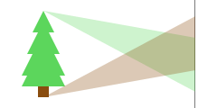
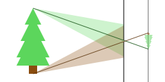
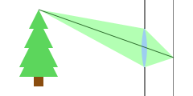

Click/Drag to add/move points. Click existing points to remove them
Big Pinholes
Or, why lenses are pretty brilliant
Pinhole projections are so easy to make
that pinholes are often discovered when people notice their projections:
.jpg) Sun projecting through leaves just before an eclipse
Sun projecting through leaves just before an eclipse
To understand how to make images with pinholes, we have to look at how light reflects off objects. In general, when light rays hit an object, they bounce off in many directions:  If we lay out a photographic film, light rays from any point can hit many parts of the film.
A pinhole camera works by imposing order on the light that passes through it. They make it so that only light coming from one direction can only hit a small part of the film: 
The good news is that this produces an image. The bad news is that we now block most of the light in the scene. so we need to wait a long time to collect enough light to form an image. This is fine for landscapes, where you can set your camera on a tripod and leave it for an hour. This is less fine for moving subjects like cats or F1 cars.
But what if, instead of blocking these rays that are headed for the wrong part of the film, we could bend them back in the right direction?  This is what a lens tries to do. An ideal lens projects light like a pinhole, but lets you collect all the light that hits its area.